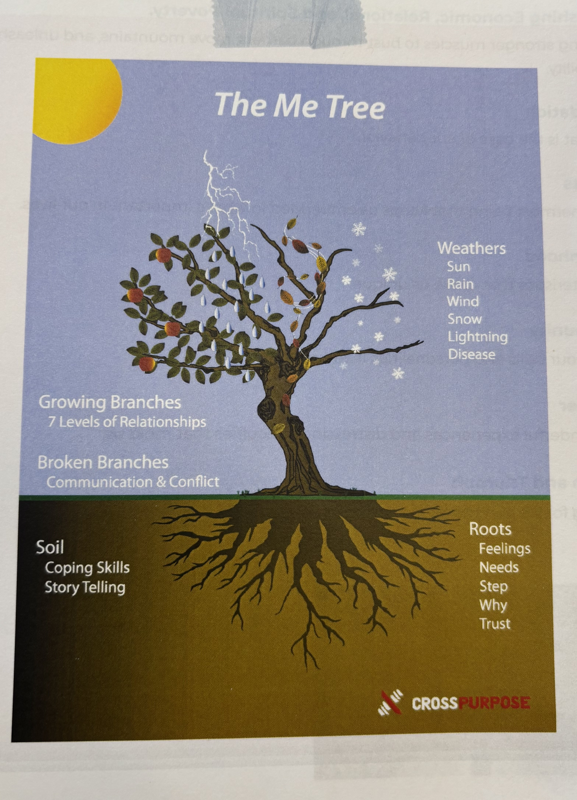

Week 2 focused on self-awareness and developing our identity within the workplace. We explored our roots—our foundation—using the "Me Tree" tool to reflect on who we are and why we do what we do. This helped us uncover our driving forces and the motivations that keep us moving forward. We closed the week by giving and receiving feedback from fellow leaders, fostering growth through shared insights and perspectives.
A notable event this week was our first community gathering. We kicked things off with games and food, creating a relaxed and welcoming atmosphere. One of the highlights was a show-and-tell session, where I chose to bring myself and share the story behind my tattoos. I have 16 tattoos, and I've personally done all but three of them—each one carrying its own meaning and reflection of my journey.
Back to Homepage